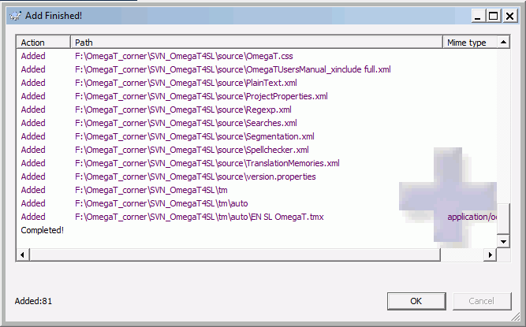

Le traduction de equipa (in collaboration) offerite ab OmegaT es basate super le 'Functionalitate de version' o 'Controlo de revision', largemente utilisate ab le communitate de software pro mantener le controlo del cambios al codice de un programma e permitter le collaboration sin impedimentos intra le equipa de disveloppamento. OmegaT supporta duo del popular 'systemas de controlo de version' (Version Control Systems = VCS in breve), "Subversion" ex Apache frequentemente abbreviate in SVN, secundo le nomine de su commando svn) e Git. Le avantages de un systema VC pro un equipa de traductores in breve son:
-
Plure membros del equipa pote operar re le projecto de traduction simultaneemente sin interferentia le un con le altere
-
Illes pote usar material in commun, como la memorias de traduction del projecto e su glossarios
-
Tote le tres minutas, per arrangiamento initial, un version renovate del datos in commun es disponibile al resto del equipa
-
Le systema gere le controlo de version pro le datos in commun
-
Le conflictos - per exemplo traductiones alternative del mesme segmento o entrata del glossario - pote esser examinate, resolute e mergite
Le terminos sequente, a usar in le texto in basso, merita un breve explication:
-
Le server VCS - id es le server SVN o le GIT es le ambiente ubi le material commun es conservate e mantenite sur le rete. Le server pote exister in le rete local, ma in le majoritate del casos illo essera disponibile sur interrete, id es via un adresse URL. Un membro del equipa, le administrator del projecto, debe cognoscer le tractamento al latere del server, id es le labor re le preparation del ambiente, como importar le projecto OmegaT, como assignar le derectos de accesso pro e membros del equipa, como resolver le conflictos, etc..
-
Le cliente VCS: Pro tu interfacie con le server debe esser installate un cliente SVN o Git sur le computatores del "administratores del projecto" implicate in le projecto OmegaT. Clientes multo popular pro le ambiente Windows es TortoiseSVN e TortoiseGit. Altere systemas operative (Linux, OS X) offere pacchettos simile.
-
deposito: le posto ubi le material in commun es salvate e mantenite, sia sur un rete a accesso local sia in interrete. Le membros del projecto se connecte con illo via lor cliente VCS.
-
discarga (checkout): le operation que crea un copia functionante ex le deposito in tu computator local. Le server retene le informationes discargate durante le discarga, de maniera que plus tarde le consigna (vide in infra) pote esser exequite in un maniera ordinate.
-
consigna (commit): un vice que un nove version local del material discargate es preste, on pote lo consignar al deposito e assi lo render disponibile al resto del equipa Le server assecura se que omne cambios que conflige, per duo membros que opera sur le mesme contentos discargate, essera resolute.
-
administrator: le persona responsabile del creation e del mantenimento del deposito, id es le cura del labor del latere del server. Pro evitar omne problemas, sol un persona deberea haber iste privilegios al minus initialmente.
-
usator: un membro del equipa, que collabora sur le projecto commun.
Il ha duo possibilitates pro exequer un server SVN: tu pote install SVN sur tu proprie server o tu pote usar un servicio hospite. Quando tu usa un servicio externe tu debe esser al currente del implicationes possibile in terminos de confidentialitate, depois que tu es cargante le documento original sur un server for de tu controlo directe. Alias, pro evitar iste question tu pote preparar un server SVN private, per exemplo si tu ja ha un server Apache que include le software in question (per exemplo VisualSVN).
Once the SVN server is available, project managers must locally install a SVN client, in order to manage the project contents on their computers. Pro Windows nos recommenda TortoiseSVN. Pro Mac tu pote discargar le cliente per exemplo ex SourceForge, Pro Linux vide Commandos e Scriptes de Subversion.
Le procedura presentate ci fide sur le server SVN gratuite (limitate a 2 usatores) offerite per ProjectLocker. Nota: le creator del deposito ha implicitemente le privilegios del administrator pro le deposito create. In prime loco signa in le site o - si il es vostre prime vece sur le site, que vos registra pro illo e que vos nota vos nomine del usator e contrasigno pro le futur projectos.
-
Crear un nove projecto sur ProjectLocker 2.
-
Scribe le nomine e le description del thesauro. (
OmegaTeLocalisation OmegaT SLin le exemplo utilisate ci) -
Eliger le
-
Clic
Aperi le vista Projects pro tu conto. Le URL monstrate sub Servicios de Projecto essera usate per SVN pro connecter le clientes al server SVN que tu ha justo establite. Isto es alsi le loco pro adder membros del equipa al projecto e assignar a illes lor privilegios. Nota que le membros del equipa debe esser registrate antea, ante que tu pote adder illes al projecto (Nota: in le version gratuite de ProjectLocker on es permittite sol duo usatores per projecto).
Le projectos pote esser tractate secundo tu stilo de disveloppamento e tu necessitates. Como in le caso del projectos de OmegaT,
tu necessitara depositos separate pro pares de lingua differente. Intra un par de lingua date il es optime servar subjectos
vel clientes differente como depositos separate. Le alternativa es haber un singule deposito con sub plicasProject1, Project2, etc., e le material commun via plicas tm, glossary e dictionary commun.
Pro le exemplo monstrate ci nos decideva pro le projecto OmegaT uno - un sol deposito pro le rationes de simplicitate.
Le deposito es vacue in iste momento. Crea in prime loco un plica cliente sur tu disco dur. Crea un plica vacue, ubi tu retenera tu projecto e clicca con le dextero sur illo. Selige TortoiseSVN > Checkout. Appare le fenestra de dialogo sequente:

Inscribe le URL, supplite per ProjectLocker, in le campo URL of repository. Assecura te que le campo Checkout directory es correcte, id es illo specifica le plica vacue que tu ha create, e pulsa OK. un vice que le operation ha finite, tu pote controlar le plica dicite: illo deberea ora continer un sub plica .svn e un placa OK verde sur su icone monstrara, que le contentos del plica son renovate:
In le grado successive, nos addera le files OmegaT al plica local. Le files sequente debe esser in commun inter le membros del equipa e assi debe ser includite in omne caso:
-
le file del projecto omegat -
omegat.project -
le memoria de traduction -
omegat\project_save.tmx -
le contentos del plica fonte
-
le definition del filtros projecto-specific -
omegat\filters.xml
Le administrator pote decider pro comprender le plicas sequente e lor contentos assi como: tm, glossary e dictionary. Etiam ignored_words.txt e learned_words.txt in le plica omegat poter esser conveniente participar e mantener al nivello del equipa. Evitar in omne caso de adder files bak, project_stats.txt e project_stats_match.txt, in le sub plica omegat, pois que facerea los sin alicun necessitate ni profito justo infla le deposito. Tu pote desirar applicar lo identic al plica
target e su contentos.
Post copiate le files necessari in le plica checkout tu remarcara que su icone cambiava: le placa OK verde cambiava a un signo de exclamation rubre, marca del cambio in le copia local del deposito. Le duo grados sequente renovara le version del server:
-
adde le files copiate al version local del deposito: clicca con le dextero sur le plica checkout local e selige TortoiseSVN > Add. In le fenestra de dialogo que se displica, lassa omne optiones ut jam arrangiate e clicca OK. Le Adde es finite! un fenestra, simile a illo sequente apparera:
Le contentos del plica checkout essera marcate in consequentia:

-
commit le cambios local al server: clicca con le dextero sur le plica del checkout local e selige SVN Commit.... Le fenestra de Commit - se displica, vide in sequito. Controla le cambios a facer - id es le plicas e le files addite in iste caso.

Inscribe un message appropriate in le fenestra message e pulsa OK. Se aperira le fenestra Commit e monstrara le progresso del commando commit. Illo committera in prime loco le contentos currente al deposito del server e pois renovate le copia local del deposito - id es le contentos del sub plica .svn - de maniera que illo es renovate con le ultime version del deposito.
-
renova le files local ex le copia local del deposito - le cambios recipite del deposito del server demora intra le sub plica .svn ma non ancora in le files e plicas ipse. Pro renovar le files local , clicca con le dextero sur le plica del checkout e selige SVN Update. Controla le contentos del plica pro confirmar que le copia local del deposito e le files e plicas correspondente corresponde al ultime version del server:

Un vice que le projecto in equipa es preparate, le membros del equipa debe sol acceder al projecto in equipa con OmegaT. In prime loco, illes necessita usar Projecto > Discarga le Projecto in Equipa . Isto in realitate face un checkout del projecto in un plica local. Le credentiales son registrate, assi non necessita inscriber los cata vice. Sub Linux, si OmegaT demanda ancora pro tu credentiales, tu pote marcar le cassa de marca Fortia le salvamento del contrasigno como texto simple.
Pro le uso ulterior, toto lo que necessita es aperir le projecto como qualcunque altere projecto OmegaT. OmegaT recognoscera que illo es un projecto in equipa, e synchronisara omne cosa automaticamente, tote le tres minutas, per arrangiamento initial.